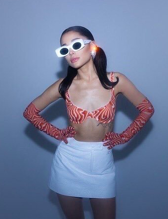
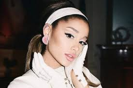
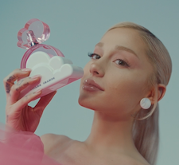
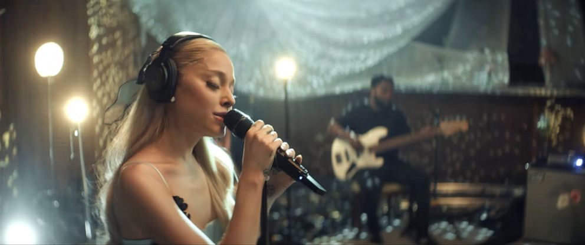

New Makeup Line r.e.m. beauty Drops
The singer has been teasing a new beauty line for months and has
eventually begun promoting her new brand to her fans. On the 12th of
November in 2021, Grande announced the release of her makeup line,
r.e.m. beauty. She expressed online, “i cannot wait to see what you
beautiful humans create with these products and how they inspire to
express yourselves’.
This latest celebrity’s makeup line has been in the works for two
years and includes a variety of cosmetics to start off this new
venture for the talented singer. From lip to eye products, fans can
begin to get their hands on the newest cosmetics online through
rembeauty.com. Future cosmetics are also in the works.
Through the looks of the makeup line, the pop icon was inspired by
vintage sci-fi from the 60’s which enabled her vision to create
products and promotionals that exhibit that exact era. The singer
had envisioned this beauty aesthetic from the start and planned the
concept immediately. By incorporating astronauts, planets, and her
love of 60’s fashion, the singer created a brand that gives
nostalgia to those present prior from that time-period.
r.e.m. beauty is said to be cruelty and paraben free as well as
vegan and recyclable.

Ariana Grande for r.e.m. beauty photoshoot.

Ariana Grande behind the scenes of her music video, Positions.
Cloud Becomes Cloud Pink
A new fragrance from the Grande franchise has been in the works
prior to the release from another previous perfume. The singer’s
‘Cloud’ has been a perfume many have purchased since its release in
fall 2018. It has become one of Grandes most known and favorable
perfume as it won 'Fragrance of the Year' in 2019. Due to its
popularity, the singer announced a new version of the original
called Cloud Pink which released in August.
The new perfume is said to have the same DNA as the original,
however it is meant to smell more fruity. The fragrance, Cloud, has
top notes of lavender, pear, and bergamot. Middle notes of coconut,
praline, and vanilla orchid. Base notes of sensuals musks and blonde
woods. Cloud Pink is however filled with pineapple and berries as
its top notes. Middle notes are quite similar and as far of base
notes, Cloud Pink contains amber woods, magenta moss, and musk that
can be feel more powering.
Cloud Pink, the most recent Grande fragrance released August 13th
and can be purchased online at Ulta.com and in stores the following
week nationwide at any Ulta Beauty store.

Cloud Pink by Ariana Grande
10th Anniversary of Ariana’s Debut Album
The pop superstar’s first studio album, Yours Truly, has hit 10
years since its release. Grande has surprised fans with a full week
of exciting events to celebrate her first recording album. On
Instagram, the singer announced in a short video that she will
release live versions of 5 tracks from the album all recorded during
her time in London, United Kingdom as well as special Q&As, new
merchandise collection, and unseen footage from the making of the
album.
Grande had planned and recorded a few of the tracks months prior to
the 10 year time mark. The festivities began on the 25th of August
and will conduct until the following week. Many fans have been
anticipating for Grande to return to music as she now has been
primarily focused on her beauty line and movie role. Fans can view
her live performances on Youtube as well as listening to the live
version on streaming platforms such as Spotify and Apple Music.
The first day of the long week of celebration will be a performance
of the tracks “Honeymoon Avenue” and “Daydreamin’”. The following
day will be part one of the Q&A with a merch capsule. The third live
performance of the track “Baby I” will be preceded and after that
day, the second part of the Q&A and vinyl pre-order will continue.
Eventually fans can get a hold of the two live performances of the
tracks ‘Tattooed Heart” and “Right There”. Lastly, the final live
performance of the lead single “The way” with unseen footage of the
making of the album on the last day.
This new re-release also conducts Grande’s 10 year mark of her
officially being in the music industry for an entire decade. With
Grande’s constant effort in becoming a well known pop icon, it has
caused her to be a leading contender on who is this generations top
pop vocalist.

Ariana Grande performing live from London.
Halloween Look 2023
Long time bestfriends Ariana Grande and Actress Elizabeth
Gillies reunite for Halloween to recreate the 1995 erotic drama
film, Showgirls. Grande dressed as rookie showgirl Nomi Malone
and Gillies as the hustling showgirl Cristal Connors. Both
friends had posted pictures of their costumes on Instagram as
well as clips of them recreating scenes from the film. Many fans
have noticed their love for classic films as they had also
dressed up as characters from the film, Best in Show, for
Halloween 2022.
New Music Alert Or Just Speculation?
Singer Ariana Grande may be preparing and undergoing a new music
era. The pop star has been caught by paparazzi in New York where
Grande is known to always record and work on music. Paparazzi
and fans have approached her in public about any new music in
the works, but Grande has either denied the speculations or
ignored the questions being asked.
Fans have also noticed and put two and two together about the
past and how it may reflect what Grande is doing at this very
moment in Fall 2023. Grande has been seen carrying her laptop
everywhere just as how she did in 2020 right before announcing a
new album. Could this be a coincidence?
Fans who met Grande in an elevator in New York had shared their
encounter with the singer and mentioned in their post that the
building they were in had a recording studio. This could
possibly be the start of her returning on music, however this
could also overall be a theory of her current working status.
The pop star has a lot on her plate and can be prioritizing
other projects that are not related to music.
Unreleased Hit: Will It Ever Be Released?
Fans have been desperately wanting pop star Ariana Grande to make a
comeback with a brand new single. The singer’s last album,
positions, dropped in fall 2020 and has not dropped personal music
since. Due to this, fans have tried everything in their power to
attract new music. Fans have used technology to use Grande’s voice
to cover other favorable songs with the use of AI, but mainly found
ways to sneak into the singer’s music catalog and leak unreleased
songs. Many songs and other personal projects like music videos,
behind the scenes footage, and more were also leaked to the public.
Many fans have been reluctant to listen to the leaks and rather
instead spread the music to all social platforms. The singer’s
unreleased songs have made its way to social media app TikTok where
the song fans called ‘fantasize’ began getting recognition. The song
gathered around 5 hundred million videos from the audio itself.
TikTok, known for its trends and dance videos allowed users to
create a short dance for a chorus of the singer’s unreleased track.
This viral dance caused the song to get its recognition.
The pop star is fully aware of these leaks spreading as she is one
of the most followed female celebrities on every social platform. In
a recent makeup tutorial posted on r.e.m. beauty’s Youtube channel,
she answered question and addressed issues of her personal music
stating, “You guys have heard bad song and bullsh*t demo that I’ve
ever made.” She has urged fans to stop spreading unreleased music
that she has kept personal to her and her music team.
This leaves fans wondering if it will cause the singer to continue
her music hiatus or if she returns to music, will she decide to
release the viral unreleased hit?